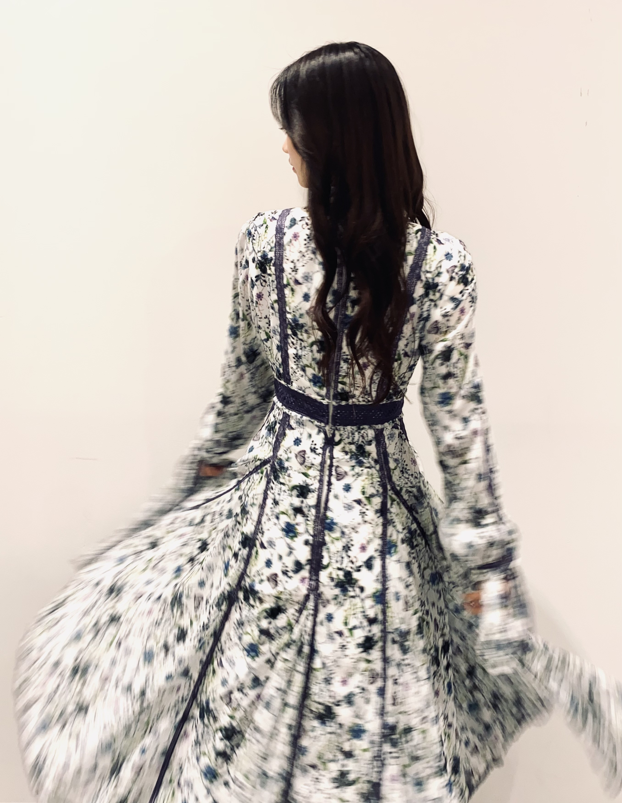
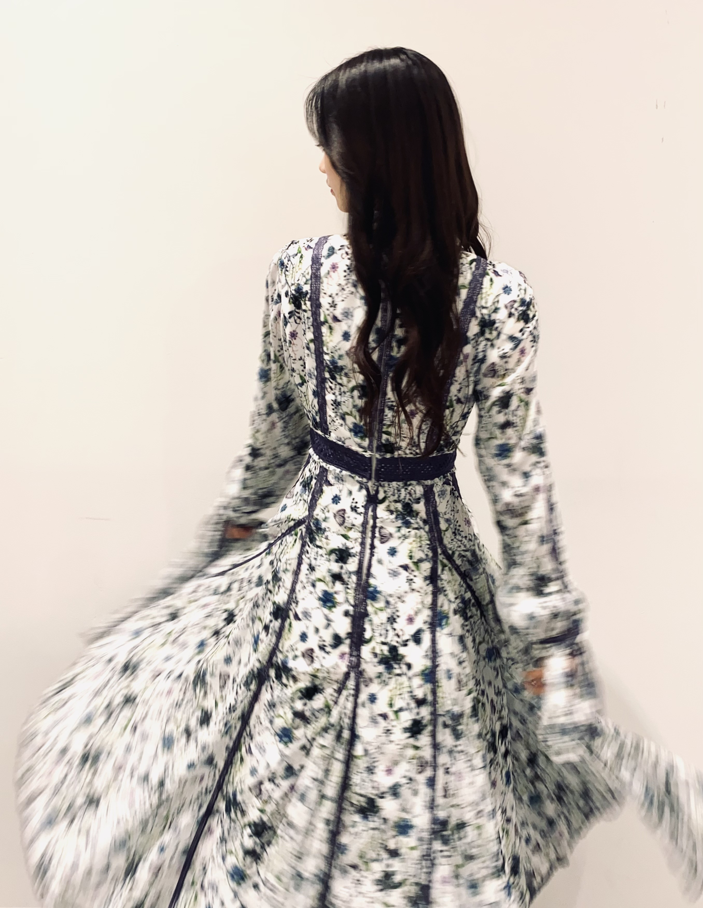

2021/1108Mon乃木坂46の寺田蘭世です。
ブログのタイトルは
もう自己紹介することも少ないだろうから
出来るだけ乃木坂46の寺田蘭世ですって言いたいなーと思って決めました。
写真集が明日発売となります。
不安やドキドキ嬉しさなど色んな気持ちが一気に
押し寄せてくる毎日で今は本当に発売されるのかと
不思議な気持ちでいっぱいです。
とにかく、最後は笑顔で終われればと今は思っています。✨
ここまで支えてくださって歩んでくださって
本当にありがとうございました。
あたたかい気持ちで見届けてくれたら嬉しいです。✨
そして、今後のことについてですが
今のところ芸能事務所に入るといった予定はなく
引退という形になります。
中学2年生で乃木坂46のオーディションを受け
乃木坂46に出逢ってから約9年が経ちます。
アイドルやタレントさんになろうなんて
夢にも思ったこともなくて
オーディションも初めてで
それまでの14年間では
アイドルになる為の努力すらしたこともなく
ただ、運命に導かれて乃木坂46に入った私には
もしかしたら贅沢すぎる9年間だったのかもしれません。
こんなに若くしてアイドルと向き合ってきた私は
おそらく自分自身でもアイドルとしての
私しかまだ知りません。
多感な時期も全て乃木坂46に捧げてきた
自信があるからこそ今回この決断をしました。
自分の中では沸々とやりたいもの
こういう人でありたいというビジョンは
小さな頃から変わりはありません。
乃木坂46として色んなことを経験して
夢を叶える大変さ
思い通りにいかないこと
嬉しいことも悲しいことも沢山ありました。
時には心折れそうなこともありました。
それでも、私の中にある意志は揺るぎませんでした。
そのどんな事があっても
どんなに向かい風が吹こうとも揺るがなかった
ずっと自分らしさを貫き通したこと
意志を持てた事はこれからの自分への財産となり
大きな自信につながりました。
乃木坂46という場所で濃ゆい人生を歩んできて
勿論、まだまだ未熟ではありますが
乃木坂46に居たからこそ
若くして色んなものを肌で感じられる
場面が多かったからこそ
幼い頃の私よりも夢はもっと大きく
そしてもっと高みを目指したいと思えるようにもなりました。
夢を叶える、自分のやりたい事をやる
これらは凄く時間がかかるかも知れません。
反対にもしかしたら
私が乃木坂46に出逢ったみたいに
運命的に案外さくっと見つかるかもしれません。
それは誰もわからないことですが
また新しい事を自分の目で見て
肌で感じて学ぶ時間も欲しいなと
今の私は一番思っています。
中学生の頃から毎日毎日休みなく今日この日まで
乃木坂46というものに向き合って
正解のない道をがむしゃらに歩んできました。
少しばかり自分に夏休みをあげようかなと。
沢山勉強して
沢山色んなものを見て
もっと自分が発信することで
自分が何処かで生きている事で
色んな人の為になる活動をしたい。
今ある常識も勿論大切だけど
自分らしさを持って人にリスペクトを込めて
常に新しい形を作り出したい。
そういう思考になれたのは紛れもなく
乃木坂46という場所に出逢えたからです。
とにかく明日からも変わらず日々精進。
残りの時間も宜しくお願いいたします。
そして、卒業してからも
お互い幸せになりましょう。✨
一生いい意味で未熟でありたいです。
沢山色んな人と出逢って
毎日に初めての感情やご縁があって
大変だろうけど色んな経験をずっとずっとして
生きていきたいです。
何処にいても私は私です。
だからそこは安心していて欲しいです。
ふと、思い出した時に
推していて良かったなと言ってもらえるような人で
ずっとありたいです。
気高く自分をしっかり持ち
人に感謝してそばにいる人に希望や癒し笑顔を与えられる人でずっとありたいです。
ひとまず、明日は写真集発売日です。✨
遂に来てしまいました。
是非、最後の思い出一緒に作りましょう。
私からの最後のお願いです。
一緒に素敵な思い出作って欲しいです。✨
今はそこで気持ちがいっぱいいっぱいです。
ドキドキもするし本当に不思議です。
でも、とにかく受け取り方は人それぞれだろうけど
沢山の人に何か気持ちが届く
そんな写真集になってくれればいいなと思っています。
好きだから手に取ってみたも良き
写真の雰囲気が好きだからも嬉しいですし
地元が撮影スポットだからも嬉しいですし
乃木坂46のファンだから
乃木坂46のファンだったから
どちらも嬉しいです。
2期生が好きだからも嬉しいですし
なんとなく気になってからでも本当に嬉しいですし
ファッションの参考でも嬉しいですし
思い出に手に取ってくださるのも嬉しいです。
海外で応援してくださっている皆さん
全然会えなくて申し訳なかったです。
でも、凄く私は皆さんのこと大好きです。
伝わっていたら何よりです。
言葉や住んでいる場所は違くても
写真なら伝わるかなーと
是非、見てください。✨
紙だからこそ伝わるものがあると思います。
私からの最後のメッセージだと思って手に取って見てください。
本当の本当に
乃木坂46の寺田蘭世としては最後の大仕事。
色んな事をしてきましたが
最後くらい心から笑顔でいたいと思っています。
是非、最後仲良くして下さい。


最近寒くなってきたのであたたかくしてくださいね。
また、明日。✨
もう自己紹介することも少ないだろうから
出来るだけ乃木坂46の寺田蘭世ですって言いたいなーと思って決めました。
写真集が明日発売となります。
不安やドキドキ嬉しさなど色んな気持ちが一気に
押し寄せてくる毎日で今は本当に発売されるのかと
不思議な気持ちでいっぱいです。
とにかく、最後は笑顔で終われればと今は思っています。✨
ここまで支えてくださって歩んでくださって
本当にありがとうございました。
あたたかい気持ちで見届けてくれたら嬉しいです。✨
そして、今後のことについてですが
今のところ芸能事務所に入るといった予定はなく
引退という形になります。
中学2年生で乃木坂46のオーディションを受け
乃木坂46に出逢ってから約9年が経ちます。
アイドルやタレントさんになろうなんて
夢にも思ったこともなくて
オーディションも初めてで
それまでの14年間では
アイドルになる為の努力すらしたこともなく
ただ、運命に導かれて乃木坂46に入った私には
もしかしたら贅沢すぎる9年間だったのかもしれません。
こんなに若くしてアイドルと向き合ってきた私は
おそらく自分自身でもアイドルとしての
私しかまだ知りません。
多感な時期も全て乃木坂46に捧げてきた
自信があるからこそ今回この決断をしました。
自分の中では沸々とやりたいもの
こういう人でありたいというビジョンは
小さな頃から変わりはありません。
乃木坂46として色んなことを経験して
夢を叶える大変さ
思い通りにいかないこと
嬉しいことも悲しいことも沢山ありました。
時には心折れそうなこともありました。
それでも、私の中にある意志は揺るぎませんでした。
そのどんな事があっても
どんなに向かい風が吹こうとも揺るがなかった
ずっと自分らしさを貫き通したこと
意志を持てた事はこれからの自分への財産となり
大きな自信につながりました。
乃木坂46という場所で濃ゆい人生を歩んできて
勿論、まだまだ未熟ではありますが
乃木坂46に居たからこそ
若くして色んなものを肌で感じられる
場面が多かったからこそ
幼い頃の私よりも夢はもっと大きく
そしてもっと高みを目指したいと思えるようにもなりました。
夢を叶える、自分のやりたい事をやる
これらは凄く時間がかかるかも知れません。
反対にもしかしたら
私が乃木坂46に出逢ったみたいに
運命的に案外さくっと見つかるかもしれません。
それは誰もわからないことですが
また新しい事を自分の目で見て
肌で感じて学ぶ時間も欲しいなと
今の私は一番思っています。
中学生の頃から毎日毎日休みなく今日この日まで
乃木坂46というものに向き合って
正解のない道をがむしゃらに歩んできました。
少しばかり自分に夏休みをあげようかなと。
沢山勉強して
沢山色んなものを見て
もっと自分が発信することで
自分が何処かで生きている事で
色んな人の為になる活動をしたい。
今ある常識も勿論大切だけど
自分らしさを持って人にリスペクトを込めて
常に新しい形を作り出したい。
そういう思考になれたのは紛れもなく
乃木坂46という場所に出逢えたからです。
とにかく明日からも変わらず日々精進。
残りの時間も宜しくお願いいたします。
そして、卒業してからも
お互い幸せになりましょう。✨
一生いい意味で未熟でありたいです。
沢山色んな人と出逢って
毎日に初めての感情やご縁があって
大変だろうけど色んな経験をずっとずっとして
生きていきたいです。
何処にいても私は私です。
だからそこは安心していて欲しいです。
ふと、思い出した時に
推していて良かったなと言ってもらえるような人で
ずっとありたいです。
気高く自分をしっかり持ち
人に感謝してそばにいる人に希望や癒し笑顔を与えられる人でずっとありたいです。
ひとまず、明日は写真集発売日です。✨
遂に来てしまいました。
是非、最後の思い出一緒に作りましょう。
私からの最後のお願いです。
一緒に素敵な思い出作って欲しいです。✨
今はそこで気持ちがいっぱいいっぱいです。
ドキドキもするし本当に不思議です。
でも、とにかく受け取り方は人それぞれだろうけど
沢山の人に何か気持ちが届く
そんな写真集になってくれればいいなと思っています。
好きだから手に取ってみたも良き
写真の雰囲気が好きだからも嬉しいですし
地元が撮影スポットだからも嬉しいですし
乃木坂46のファンだから
乃木坂46のファンだったから
どちらも嬉しいです。
2期生が好きだからも嬉しいですし
なんとなく気になってからでも本当に嬉しいですし
ファッションの参考でも嬉しいですし
思い出に手に取ってくださるのも嬉しいです。
海外で応援してくださっている皆さん
全然会えなくて申し訳なかったです。
でも、凄く私は皆さんのこと大好きです。
伝わっていたら何よりです。
言葉や住んでいる場所は違くても
写真なら伝わるかなーと
是非、見てください。✨
紙だからこそ伝わるものがあると思います。
私からの最後のメッセージだと思って手に取って見てください。
本当の本当に
乃木坂46の寺田蘭世としては最後の大仕事。
色んな事をしてきましたが
最後くらい心から笑顔でいたいと思っています。
是非、最後仲良くして下さい。

最近寒くなってきたのであたたかくしてくださいね。
また、明日。✨
2021/11/08 16:54
コメント(832)
芸能界引退しないで欲しかった
もっとドラマや映画で見たかった
寂しいです
でも引退してもずっとずっと元気でいてください
改めまして卒業おめでとうございます
乃木坂46の2期生として入ってきてくれて本当によかったです
二期生の中で一番好きだったので悲しいです
本当にありがとうございました
もっとドラマや映画で見たかった
寂しいです
でも引退してもずっとずっと元気でいてください
改めまして卒業おめでとうございます
乃木坂46の2期生として入ってきてくれて本当によかったです
二期生の中で一番好きだったので悲しいです
本当にありがとうございました
漠然と芸能界にはいるのかな？と思ってたので、最後にビックリな気持ちが大きいですが、今まで見てこなかった世界に、自分が新たにやりたい事が見つかるかも知れないし結果、芸能界が良いと思ったら戻るのも自由。自分の人生なのだから悔いなく楽しんで下さいね。
蘭世！卒業おめでとう！！
9年間乃木坂でいてくれてありがとう！！
これからは夢に向かって頑張って下さい！！
いつまでも応援し続けます！！
9年間乃木坂でいてくれてありがとう！！
これからは夢に向かって頑張って下さい！！
いつまでも応援し続けます！！
卒業おめでとうございます
9年間お疲れ様でした
9年間お疲れ様でした
・・・何か、待ち遠しかったけど・・・
何か、違うカウントが進んでいる様で・・・
複雑な胸の内は、ザワザワ です。
何か、違うカウントが進んでいる様で・・・
複雑な胸の内は、ザワザワ です。
とても想いのこもったブログでうるうるしてしまいました。
今まで沢山楽しませてくれたり感動をありがとうございました。
先日のアンダーライブに初めてお邪魔しましたが、中村麗乃さんが言ってたように本当にセンターのオーラがある人だと思いました。
圧倒的な存在感を感じました。
今後についての予定はなくても
"今のところ"
という言葉に希望を抱いてまた会えるときが来るのを待ちたいと思います。
しばらくゆっくり休んでください。
沢山ありがとうございました。
今まで沢山楽しませてくれたり感動をありがとうございました。
先日のアンダーライブに初めてお邪魔しましたが、中村麗乃さんが言ってたように本当にセンターのオーラがある人だと思いました。
圧倒的な存在感を感じました。
今後についての予定はなくても
"今のところ"
という言葉に希望を抱いてまた会えるときが来るのを待ちたいと思います。
しばらくゆっくり休んでください。
沢山ありがとうございました。
蘭世さんを推していて楽しかったです
明日の写真集発売楽しみだな
明日の写真集発売楽しみだな
ついに明日だね！！
私はらんぜが与えてくれる言葉だったり、ファッションセンスとか考え方、好きなところを聞かれたらキリがないくらいたくさんあります！！
もっと早くに出会って、たくさん会いに行きたかったなーとか思ったりするけど、どのタイミングでも運命だと思ってるからそこは気にしてないよ！笑
私はらんぜに出会うことができてほんとに幸せです！たくさんありがとう！
卒業おめでとう。
らんぜの人生が誰よりも幸せでありますように
：
：
(らんぜに届け〜！！
またね！
私はらんぜが与えてくれる言葉だったり、ファッションセンスとか考え方、好きなところを聞かれたらキリがないくらいたくさんあります！！
もっと早くに出会って、たくさん会いに行きたかったなーとか思ったりするけど、どのタイミングでも運命だと思ってるからそこは気にしてないよ！笑
私はらんぜに出会うことができてほんとに幸せです！たくさんありがとう！
卒業おめでとう。
らんぜの人生が誰よりも幸せでありますように
：
：
(らんぜに届け〜！！
またね！
ブログ更新ありがとう！
かっこいいです蘭世さん！
もちろん写真集かいますし、いろんな人に薦めるので、乃木坂46の寺田蘭世として有終の美を飾りましょう！
引退という形になったとしても、アイドル、芸能人という肩書きがなくても、蘭世のことが大好きですし、どこかで会えたらいいな、そう思っています
沢山直接話をしたいことも多いのですが、ご時世もあって叶いませんでした
言いたいことを１つに絞るとするのならば、「自分の人生を彩って下さってありがとうございました」それに尽きます
かっこいいです蘭世さん！
もちろん写真集かいますし、いろんな人に薦めるので、乃木坂46の寺田蘭世として有終の美を飾りましょう！
引退という形になったとしても、アイドル、芸能人という肩書きがなくても、蘭世のことが大好きですし、どこかで会えたらいいな、そう思っています
沢山直接話をしたいことも多いのですが、ご時世もあって叶いませんでした
言いたいことを１つに絞るとするのならば、「自分の人生を彩って下さってありがとうございました」それに尽きます
蘭世、こんにちは、熱いブログありがとう
ライブ見れて嬉しかったよ！蘭世の幸せを祈ります。そして、最後まで笑顔でお別れしようねー写真楽しみだけど少し悲しくなるよ。
蘭世ありがとう。
かっこいい女性になるんだろうなぁーっとブログ読んでて思いました。
卒業後もたまには何してるか教えてください。
写真集楽しみにしてます。
かっこいい女性になるんだろうなぁーっとブログ読んでて思いました。
卒業後もたまには何してるか教えてください。
写真集楽しみにしてます。
幸せな人生になることを願います。
ほんっっっとうにありがとうございました。
最高の推しメンです。
最高の推しメンです。
お疲れ様です。
ひととして憧れている蘭世ちゃんの素敵な今が詰まった写真集、とっても楽しみにしています。
いよいよ明日発売だね。大事に、大事に、読ませていただきます。
寺田蘭世ちゃんのこれからずっと続く未来がしあわせ一杯でありますように、門出をお祝いさせていただくつもりで写真集をおもいっきり楽しんで盛り上げていこうね！
蘭世ちゃん大好きです。推せてよかったと本当に想います。
またね:-)
ひととして憧れている蘭世ちゃんの素敵な今が詰まった写真集、とっても楽しみにしています。
いよいよ明日発売だね。大事に、大事に、読ませていただきます。
寺田蘭世ちゃんのこれからずっと続く未来がしあわせ一杯でありますように、門出をお祝いさせていただくつもりで写真集をおもいっきり楽しんで盛り上げていこうね！
蘭世ちゃん大好きです。推せてよかったと本当に想います。
またね:-)
引退予定なんだ…寂しいけど色々考えて出した結論だろうし、蘭世らしい引き際だと思う。
寺田蘭世がここにいた、という証、楽しみにしてる！
寺田蘭世がここにいた、という証、楽しみにしてる！
明日の写真集発売、楽しみです！
地方在住のため、普段は本や雑誌は1日遅れて発売されるのですが、セブンネットで注文した分は発売日当日に届きます。ありがたいことです。
それから、正直あまり考えたくなかった2文字を拝見し、心臓がキュっとなりました。残念と思うのはファンのエゴかもしれませんが、今はそれが正直な気持ちです。
もちろん、ご自身がきっと何度も何度も考えて出した結論だと思うので、ファンである限りそれを最大限尊重してもいます。
ご自身に夏休みを少しさしあげて、次のステップに向けてエネルギーをためる期間に入られるのだと理解しています。
とにかく、今は「乃木坂46の寺田蘭世」をしっかり推していこうと改めて思います。我々ファンのそういう気持ちが、蘭世さんが次の段階に進むときのささやかなサポートになればこの上なく幸せです。
さて、明日からは書店を巡りますよ！
地方在住のため、普段は本や雑誌は1日遅れて発売されるのですが、セブンネットで注文した分は発売日当日に届きます。ありがたいことです。
それから、正直あまり考えたくなかった2文字を拝見し、心臓がキュっとなりました。残念と思うのはファンのエゴかもしれませんが、今はそれが正直な気持ちです。
もちろん、ご自身がきっと何度も何度も考えて出した結論だと思うので、ファンである限りそれを最大限尊重してもいます。
ご自身に夏休みを少しさしあげて、次のステップに向けてエネルギーをためる期間に入られるのだと理解しています。
とにかく、今は「乃木坂46の寺田蘭世」をしっかり推していこうと改めて思います。我々ファンのそういう気持ちが、蘭世さんが次の段階に進むときのささやかなサポートになればこの上なく幸せです。
さて、明日からは書店を巡りますよ！
今までお疲れ様でした
最後までファンへの気配りや配慮を忘れないのはさすがだなと思います
引退してしまうのはすごく残念ですが蘭世自身で決めた事、最後まで笑顔で見送りたいと思います
ありがとうございました
最後までファンへの気配りや配慮を忘れないのはさすがだなと思います
引退してしまうのはすごく残念ですが蘭世自身で決めた事、最後まで笑顔で見送りたいと思います
ありがとうございました
ブログ更新ありがとう
この言葉をあと何回言えるかと考えると寂しいです
でもどこかでまた会える気がします！！
ひとつだけ叶えられるとしたら
SNSは続けてほしいです！！
また会いましょう！楽しくみんなでお話ししましょ！
この言葉をあと何回言えるかと考えると寂しいです
でもどこかでまた会える気がします！！
ひとつだけ叶えられるとしたら
SNSは続けてほしいです！！
また会いましょう！楽しくみんなでお話ししましょ！
もっと前から知ってもっとたくさん応援したかったという心残りはありますが、好きになってから応援した期間はとても有意義で悔いはないです。
心から推していてよかったと自信を持って言えます。
引退すると今までのように応援が出来なくなるので残念ですが、蘭世ちゃんの幸せを願っています。
蘭世ちゃんも関係者のみなさんもファンのみなさんもこれから先の笑顔を祈っています。
みんなで幸せになりましょう。えいえいおー！
心から推していてよかったと自信を持って言えます。
引退すると今までのように応援が出来なくなるので残念ですが、蘭世ちゃんの幸せを願っています。
蘭世ちゃんも関係者のみなさんもファンのみなさんもこれから先の笑顔を祈っています。
みんなで幸せになりましょう。えいえいおー！
ブログありがとうございます！写真集発売もおめでとうございます！
蘭世さんの自分らしさを貫き通す姿勢がとてもかっこよくて素敵でした。
卒業する前に知ることができて、推すことができて本当によかったです。
これからもずっと応援しています！
蘭世さんの自分らしさを貫き通す姿勢がとてもかっこよくて素敵でした。
卒業する前に知ることができて、推すことができて本当によかったです。
これからもずっと応援しています！
これからも応援します！
俺も9年勤めた会社をちょっと前に辞めたよ～今は貯金を切り崩して生活してます。俺も色々な人に出会って変わりました。色々なモノに触れて考え方や感性が変わって人として何かをえる感じが僕もします。これからは自分のペースで生きて行こうと僕は思います。それが正解かどうかは死ぬ時にわかるのカナ？笑要するに悔いの無い人生がおくれたらいいなぁ～って思うよ～蘭世～またね～応援してるよ～(o´∀`)b
蘭世じゃん今までお疲れ様でした!!
長い間、ホントーにお疲れ様でした
推しててよかったなんて話しではなく、僕はどんなところでも”寺田蘭世”として前向きにひたむきに日々笑顔で活躍してる姿を見ることで自分も頑張ってこれました
これからもずっと応援してますし僕も負けないように頑張ります
本当に本当にありがとう！！！！
推しててよかったなんて話しではなく、僕はどんなところでも”寺田蘭世”として前向きにひたむきに日々笑顔で活躍してる姿を見ることで自分も頑張ってこれました
これからもずっと応援してますし僕も負けないように頑張ります
本当に本当にありがとう！！！！
蘭世ちゃんを推せて幸せだなと毎日思っています。
写真集、ほんとにおめでとう。
明日手に取るのが楽しみです。
私は蘭世ちゃんがどこにいて何をしてても大好きです。
蘭世ちゃんの決めた道をどこまでも応援したいなって思ってます。
卒業したらゆっくり休んでやりたいこと、できなかったことたくさんしてください。
とりあえず写真集楽しみです！！
これからもずっとよろしくね。
写真集、ほんとにおめでとう。
明日手に取るのが楽しみです。
私は蘭世ちゃんがどこにいて何をしてても大好きです。
蘭世ちゃんの決めた道をどこまでも応援したいなって思ってます。
卒業したらゆっくり休んでやりたいこと、できなかったことたくさんしてください。
とりあえず写真集楽しみです！！
これからもずっとよろしくね。
そうか〜引退か。
すっごく寂しいけど、蘭世ちゃんが書いた言葉だから全面的に信じられるし、やりたい事を見付けて、それを叶えられる強さと力を持ってるのを知ってるから、蘭世ちゃんを目にする事が無くなっても、幸せで居てくれてるんやろうなって自信があるよ
それは9年間で、蘭世ちゃん自身が見せてきた姿が物語ってるから。
写真集を卒業アルバムのように大事にします。想いを込めて作った写真集で会えるってなんかロマンティックやね。
蘭世ちゃん本当にありがとう。幸せを願ってます。
すっごく寂しいけど、蘭世ちゃんが書いた言葉だから全面的に信じられるし、やりたい事を見付けて、それを叶えられる強さと力を持ってるのを知ってるから、蘭世ちゃんを目にする事が無くなっても、幸せで居てくれてるんやろうなって自信があるよ
それは9年間で、蘭世ちゃん自身が見せてきた姿が物語ってるから。
写真集を卒業アルバムのように大事にします。想いを込めて作った写真集で会えるってなんかロマンティックやね。
蘭世ちゃん本当にありがとう。幸せを願ってます。
これからもずっと応援してます。
ブログ更新ありがとう！
芸能界引退は悲しいけど、これからも頑張ってね！
応援してます！
芸能界引退は悲しいけど、これからも頑張ってね！
応援してます！
早く明日になれ～・・・
・・・ず～っと、明日来るな～～ッ
・・・ず～っと、明日来るな～～ッ
蘭世さんブログ更新お疲れ様です。
蘭世さんの絶対にブレない芯
負けそうになっても絶対に折れない強さが
大好きです。
引退されても心の中で応援し続けていきます。
そうすればまたいろんな経験をして、
いろんなことを学んでパワーアップした
新しい蘭世さんとどこかで出会えるのかなと思います。
卒業、引退されてからも
良い時間を過ごせるように祈っています。
とりあえずは明日の写真集発売ですね！
今からめちゃくちゃ楽しみですし、
久々に遠出してパネル店も見る予定です！
家族や友達に配り回る計画もしているので
「これからでっかいことを成し遂げる人の写真集だよ」
と宣伝したいと思いますʕ•ᴥ•ʔ
これからも何卒
明日はきっと素敵な１日になるよ♪
ここまでたくさん頑張ったね！
お疲れ様でした
そして、蘭世のファンになれて幸せでした。
これからもずっと蘭世の推しです。
本当にお疲れ様でした。
好きです
ありがとう
ありがとう
ブログの更新ありがとうございます。
卒業を発表してからの蘭世の発言やアンダラでのパフォーマンスを見てなんとなく覚悟はしてたけど芸能界からは引退してしまうんですね、、、としんみりしたい気持ちと明日ついに写真集発売だ！！！という嬉しい気持ちが自分の中でぶつかってます。でも蘭世が決めた道に間違いなんてあるわけがないので引退してもずっと応援してます。とりあえず写真集楽しみにしてますね！
卒業を発表してからの蘭世の発言やアンダラでのパフォーマンスを見てなんとなく覚悟はしてたけど芸能界からは引退してしまうんですね、、、としんみりしたい気持ちと明日ついに写真集発売だ！！！という嬉しい気持ちが自分の中でぶつかってます。でも蘭世が決めた道に間違いなんてあるわけがないので引退してもずっと応援してます。とりあえず写真集楽しみにしてますね！
これからも幸せでありますように！
ありがとう寺田蘭世。さよならんぜ。また会おうぜ。。。大好きだぜ。
蘭世が作る服が着たい、アパレル始めるなら教えて、、、
蘭世ちゃん、引退なんだね。
今まで推してて本当に幸せだったよ。写真集絶対買うね(;;)
今まで推してて本当に幸せだったよ。写真集絶対買うね(;;)
引退と言う言葉に驚きました！！！
アンダーライブ行きました。
良かったです。
これからの人生が素敵なものでありますように！ (-人-)
(-人-)

アンダーライブ行きました。
良かったです。
これからの人生が素敵なものでありますように！
蘭世ちゃんの選んだ道をいつまでも笑顔で応援してるから、安心して巣だってください！九年間本当にお疲れ様。小顔でミステリアスで大好きでした。幸せにね
ブログ更新ありがとうございます。
引退は物凄く寂しいけど蘭世の決めたことなら応援します。
ずっとずっと大好きです。
引退は物凄く寂しいけど蘭世の決めたことなら応援します。
ずっとずっと大好きです。
ブランコ大好きです！
写真集楽しみです！
写真集楽しみです！
らんぜちゃんブログありがとう！！
アンダーライブ本当に最高だったよ！！
らんぜちゃんもみんなも本当に輝いていたよ！！
みんなのパフォーマンスに胸が熱くなった！！
カッコよくて強さのあるアンダーライブ本当に最高だったよ！！
4期生ちゃんも初めてのアンダーライブとは思えないくらい本当にすごかったよね！！
本当に最高だったよ！！
ありがとう！！
らんぜちゃんの引退はらんぜちゃんが決めたことだから僕たちファンはらんぜちゃんの進む道をこれからも全力で応援して行くよ！！
らんぜちゃんが乃木坂46で学んだことそして残してくれたもの全部を大切にしたい！！
これからも一緒に乃木坂46のみんなのことを応援して行こうね！！
らんぜちゃんの芯があって強いところ、優しくてかわいいところ全部が本当に大好きだよ！！
僕もらんぜちゃんのような素敵な大人になりたい！！
それは乃木坂46のメンバーのみんなが思ってることだよ！！
本当に今まで乃木坂46としてがんばってくれてありがとう！！
明日はついに写真集発売日！！
配信も本当に楽しみだよ！！
みんなで最高の時間にしようね！！
沢山の人にらんぜちゃんの写真集が届きますように！！
身体には気をつけてがんばってね！！
らんぜちゃん！！大好きだよ！！
アンダーライブ本当に最高だったよ！！
らんぜちゃんもみんなも本当に輝いていたよ！！
みんなのパフォーマンスに胸が熱くなった！！
カッコよくて強さのあるアンダーライブ本当に最高だったよ！！
4期生ちゃんも初めてのアンダーライブとは思えないくらい本当にすごかったよね！！
本当に最高だったよ！！
ありがとう！！
らんぜちゃんの引退はらんぜちゃんが決めたことだから僕たちファンはらんぜちゃんの進む道をこれからも全力で応援して行くよ！！
らんぜちゃんが乃木坂46で学んだことそして残してくれたもの全部を大切にしたい！！
これからも一緒に乃木坂46のみんなのことを応援して行こうね！！
らんぜちゃんの芯があって強いところ、優しくてかわいいところ全部が本当に大好きだよ！！
僕もらんぜちゃんのような素敵な大人になりたい！！
それは乃木坂46のメンバーのみんなが思ってることだよ！！
本当に今まで乃木坂46としてがんばってくれてありがとう！！
明日はついに写真集発売日！！
配信も本当に楽しみだよ！！
みんなで最高の時間にしようね！！
沢山の人にらんぜちゃんの写真集が届きますように！！
身体には気をつけてがんばってね！！
らんぜちゃん！！大好きだよ！！
ただただありがとうです。
自分は自粛期間でハマりまだ一年とちょっとしか推せてないですが、本当に幸せでした。
ミーグリも一回しか参加できなかったのですが、蘭世さんに応援していただき、いま受験勉強頑張っています。
正直言うとめちゃくちゃ寂しいです…でも蘭世さんの人生だし、蘭世が決めたことを応援したいと思います。
推してて良かったと思いますし、これからも応援しています。
本当にありがとう。
自分は自粛期間でハマりまだ一年とちょっとしか推せてないですが、本当に幸せでした。
ミーグリも一回しか参加できなかったのですが、蘭世さんに応援していただき、いま受験勉強頑張っています。
正直言うとめちゃくちゃ寂しいです…でも蘭世さんの人生だし、蘭世が決めたことを応援したいと思います。
推してて良かったと思いますし、これからも応援しています。
本当にありがとう。
感慨深いものですね…
不安も楽しみも両方ありますね。
少ないやもですが、3冊は買わさせて頂きます。
やっぱり引退されるんですね。今までの発言的にそうではないかと思ってたんですけどね。。
芸能界にいてもいなくても、応援はちゃんとしてるんで！！
思っていた以上に蘭世先生が前を向いていて、すごく安心しました！！
小さい頃からの夢といえば、デザイナーさんとかの服に関わる仕事もありましたよね？？
てことは、会えたりする可能性はありますね。
乃木坂46在籍中に対面することはありませんでしたが、もし、今後会う機会を作ってくださるのであれば、是非参加させて頂きたいと思います！
こちらこそ、残りの時間も宜しくお願いいたします。
自分はもちろんなのですが、個人的に蘭世先生にはもっともっと幸せになって欲しいです✨
推し始めて多分4年くらいですが、今でも推していて良かったと心から思っています。
出逢ってくださりありがとうございます。
最後の思い出。凄く心に来ます。。
写真集発売決定の発表から今日まで、蘭世先生を始め、ひょろひょろくん社長・スタッフさん・蘭世先生推しの皆さんとたくさんの写真集の思い出を作れてきました。
そして、明日からは発売後の思い出作り。いっぱい素敵な思い出を作って、増やしていきましょう！！
最後を連発されると、本当に近いことに驚きが隠せません。
乃木坂46の寺田蘭世 さんとしては最後やもしれませんが、寺田蘭世 さんとしてはこれからも続いていく訳ですので、乃木坂46の寺田蘭世 さんとしての最後のお願いやメッセージ、お仕事、願い。諸々を大切に噛み締め、素敵な思い出を作れたら自分も嬉しいです！
最後にファンの事を思ってくださる蘭世先生はやっぱり蘭世先生ですね！
蘭世先生もあたたかくしてくださいね。
*☼*―――――*☼*―――――*☼*
手紙を書くので、いつ届くのか分かりませんが、手に届いた時はお手隙の際にお読みください。
字は汚いですし、きっと拙い言葉の羅列だと思いますが、ぜひご自愛ください。
本名と毎回のブログのコメントの最後にしてる名前、両方書いときます。
過去のコメントを1回でも読んでくださっていたり、手紙だけでも読んでくださるのであれば嬉しい限りです。
では
また、明日✨
広島住みの璃音
不安も楽しみも両方ありますね。
少ないやもですが、3冊は買わさせて頂きます。
やっぱり引退されるんですね。今までの発言的にそうではないかと思ってたんですけどね。。
芸能界にいてもいなくても、応援はちゃんとしてるんで！！
思っていた以上に蘭世先生が前を向いていて、すごく安心しました！！
小さい頃からの夢といえば、デザイナーさんとかの服に関わる仕事もありましたよね？？
てことは、会えたりする可能性はありますね。
乃木坂46在籍中に対面することはありませんでしたが、もし、今後会う機会を作ってくださるのであれば、是非参加させて頂きたいと思います！
こちらこそ、残りの時間も宜しくお願いいたします。
自分はもちろんなのですが、個人的に蘭世先生にはもっともっと幸せになって欲しいです✨
推し始めて多分4年くらいですが、今でも推していて良かったと心から思っています。
出逢ってくださりありがとうございます。
最後の思い出。凄く心に来ます。。
写真集発売決定の発表から今日まで、蘭世先生を始め、ひょろひょろくん社長・スタッフさん・蘭世先生推しの皆さんとたくさんの写真集の思い出を作れてきました。
そして、明日からは発売後の思い出作り。いっぱい素敵な思い出を作って、増やしていきましょう！！
最後を連発されると、本当に近いことに驚きが隠せません。
乃木坂46の寺田蘭世 さんとしては最後やもしれませんが、寺田蘭世 さんとしてはこれからも続いていく訳ですので、乃木坂46の寺田蘭世 さんとしての最後のお願いやメッセージ、お仕事、願い。諸々を大切に噛み締め、素敵な思い出を作れたら自分も嬉しいです！
最後にファンの事を思ってくださる蘭世先生はやっぱり蘭世先生ですね！
蘭世先生もあたたかくしてくださいね。
*☼*―――――*☼*―――――*☼*
手紙を書くので、いつ届くのか分かりませんが、手に届いた時はお手隙の際にお読みください。
字は汚いですし、きっと拙い言葉の羅列だと思いますが、ぜひご自愛ください。
本名と毎回のブログのコメントの最後にしてる名前、両方書いときます。
過去のコメントを1回でも読んでくださっていたり、手紙だけでも読んでくださるのであれば嬉しい限りです。
では
また、明日✨
広島住みの璃音
ファッション界などで活躍されたら嬉しいな～
・・・私の本音。
・・・私の本音。
ブログ更新ありがとうございます
蘭世を推してて良かったとずーっと思い続ける自信があります！安心してください！歳をとっても絶対忘れません。親戚でもないのにおかしいですけど蘭世は私の誇りです☺️
写真集、予約しました！沢山は買えませんでしたが5冊は買う予定です。買い足せたら買い足します....手にとって欲しいと言っていたので明日お店でも買いますね☺️
あと私事になるんですけど大学受かりました！！！最初に蘭世の握手会に行った時は中学生だった私が大学生です！感慨深いですね笑この5年間本当に幸せでした。これからも私は幸せで楽しく過ごすので蘭世も幸せでい続けてくださいね☺️
クリスマスも近づいていますね。冬は楽しいですが寒くなってきているので暖かくしてくださいね！
蘭世を推してて良かったとずーっと思い続ける自信があります！安心してください！歳をとっても絶対忘れません。親戚でもないのにおかしいですけど蘭世は私の誇りです☺️
写真集、予約しました！沢山は買えませんでしたが5冊は買う予定です。買い足せたら買い足します....手にとって欲しいと言っていたので明日お店でも買いますね☺️
あと私事になるんですけど大学受かりました！！！最初に蘭世の握手会に行った時は中学生だった私が大学生です！感慨深いですね笑この5年間本当に幸せでした。これからも私は幸せで楽しく過ごすので蘭世も幸せでい続けてくださいね☺️
クリスマスも近づいていますね。冬は楽しいですが寒くなってきているので暖かくしてくださいね！
本当にお疲れさま。
本当にありがとう。
これまでらんぜがたくさんの人に与えてきたハッピーが、大きなハッピーになって戻ってきますように…
蘭世さん、ブログ更新ありがとう(泣)
引退しても、、、
何かしら、発信する立場の人でいて欲しい。。。
インスタなどのSNSの発信は続けて欲しい…
わがままで勝手に言ってすいません。
正直な気持ちです。
ありがとう
喜章（よしあき）
引退しても、、、
何かしら、発信する立場の人でいて欲しい。。。
インスタなどのSNSの発信は続けて欲しい…
わがままで勝手に言ってすいません。
正直な気持ちです。
ありがとう
喜章（よしあき）
らんぜー。決意表明ありがとう。乃木坂を卒業しても、どこかで会えると思っていたから、引退という言葉を聞いて驚いています。が、蘭世の決めたことだから、卒業までの乃木坂生活を心置きなく楽しんでください！
配信ではありましたが、アンダーライブ堪能しました。
１期２期が３人しかいなくて、時代は変わったなぁと思いました。
これからも頑張ってください！
配信ではありましたが、アンダーライブ堪能しました。
１期２期が３人しかいなくて、時代は変わったなぁと思いました。
これからも頑張ってください！


どこにいても、蘭世ちゃんには素敵な人生を歩んでいく姿しか見えません。
最後まで、応援しています。